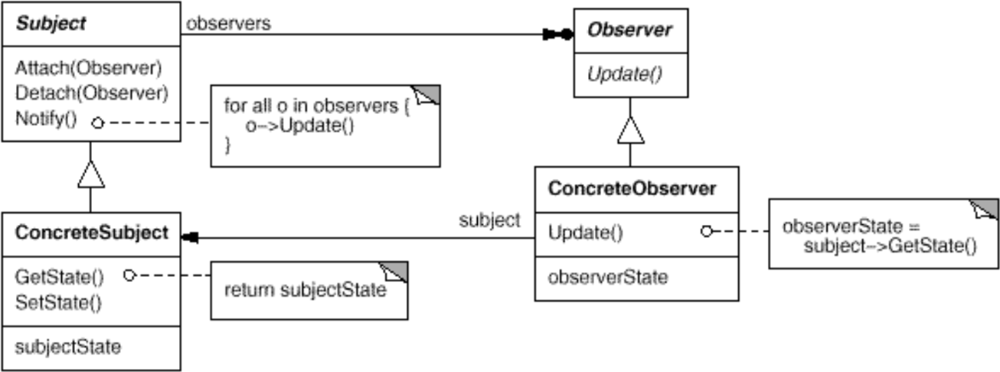
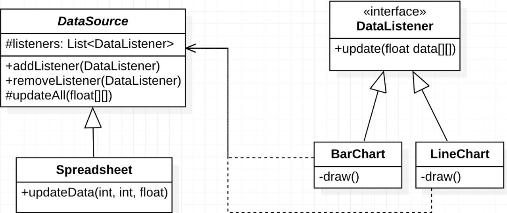

Observer è un object design pattern comportamentale.
Si assuma di voler creare un’applicazione per manipolare fogli di calcolo.
Una classe Spreadsheet contiene i dati e le formule
inserite dall’utente.
Una classe BarChart permette di visualizzare i dati in
un diagramma a istogrammi, mentre un’altra classe LineChart
mostra i dati con una curva su un piano cartesiano.
Problema: gestire le interazioni tra una sorgente di dati e classi diverse che utilizzano questi dati. I diagrammi non devono avere una dipendenza forte dalla sorgente di dati (observable) e la sorgente di dati non deve avere dipendenze forti dagli utilizzatori (observers). Bisogna utilizzare il modello publish-subscribe.
class Spreadsheet {
private BarChart barChart;
private LineChart lineChart;
private float data[][];
private void updateData(int x, int y, float value) {
data[x][y] = value;
barChart.updateBar();
lineChart.updateLine();
}
public float[][] getData() {
return data;
}
}
class BarChart {
private Spreadsheet sheet;
public void updateBar() {
float data[][] = sheet.getData();
draw();
}
private void draw() {
// Code
}
}
Per risolvere questo problema, è necessario definire un sistema
astratto per la comunicazione one-to-many. Per farlo, creiamo una classe
astratta Observable per rappresentare la sorgente di dati,
che contiene una lista di Observer. Creiamo poi
un’interfaccia Observer per rappresentare un utilizzatore
dei dati. Gli oggetti Observer possono iscriversi o
disiscriversi agli aggiornamenti di Observable attraverso
appositi metodi.


abstract class DataSource {
List<DataListener> listeners = new ArrayList<>();
public addListener(DataListener ld) {
listeners.add(ld);
}
public removeListener(DataListener ld) {
listeners.remove(ld);
}
protected updateAll(float data[][]) {
for(dataListener ld : listeners)
ld.update(data);
}
}
class Spreadsheet extends DataSource {
private float data[][];
private void updateData(int x, int y, float value) {
data[x][y] = value;
this.updateAll(data);
}
}
interface DataListener {
update(float data[][]);
}
class BarChart implements DataListener {
public void update(float data[][]) {
draw();
}
private void draw() {
// Code
}
}